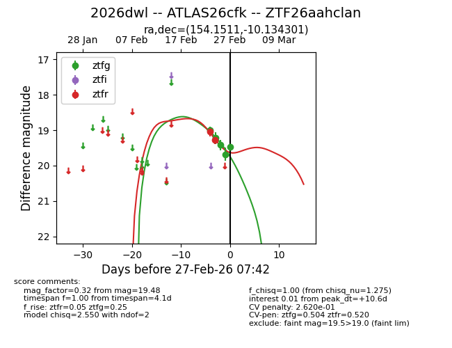
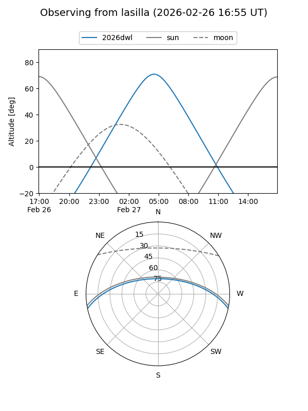
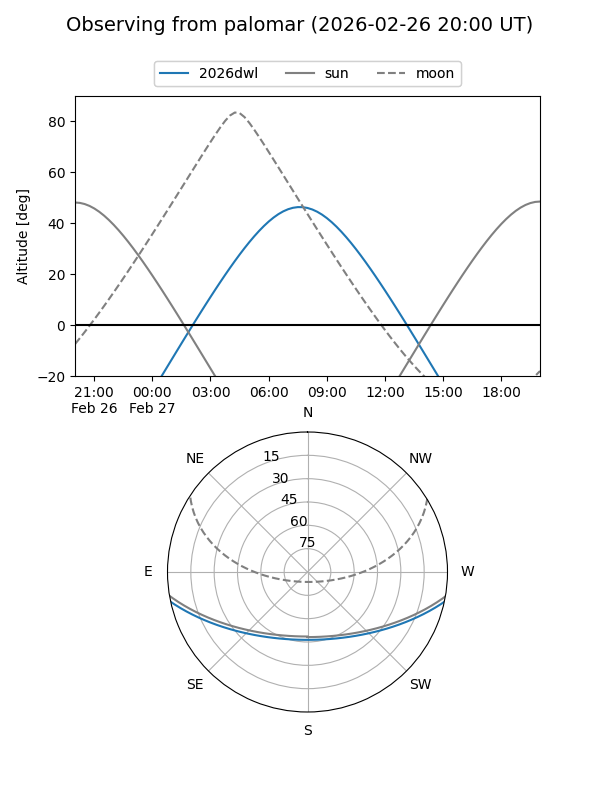
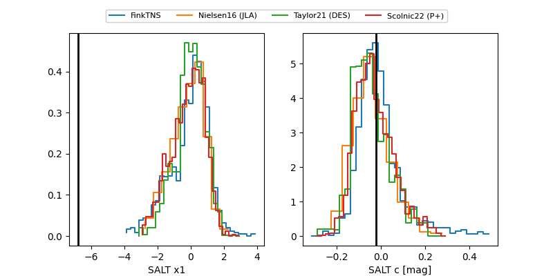

2026dwl
Target 2026dwl at 2026-02-27 07:43
Aliases and brokers:
FINK: link
Lasair: link
ALeRCE: link
TNS: link
YSE: link
alt names
ZTF26aahclan (ztf,fink_ztf)
2026dwl (tns,yse)
ATLAS26cfk (atlas)
Coordinates:
equatorial (ra, dec) = 154.1511,-10.13430
equatorial (HMS+DMS) = 10:16:36.27,-10:08:03.49
galactic (l, b) = (252.3991,+37.11553)
Flags:
likely cv
Photometry:
last ztfg=19.48, ztfr=19.28
5 ztfg, 2 ztfr detections
Lightcurve

Visibility


Additional plots
